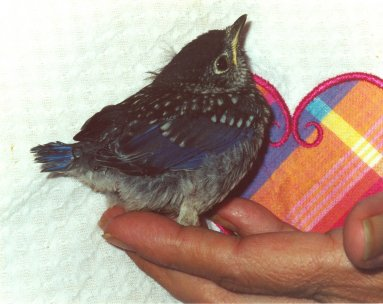

Jean Robeson Cebik was my wife and so much more. A life-long resident of the Knox County, Tennessee, she passed away Monday, November 4, 2002, at the age of 59 after a 13-month struggle with cancer. Jean worked for many years at the University of Tennessee in office administration and at Technology for Energy as a technical editor before returning to UT and earning a master's degree in French literature. Afterwards, she taught a number of years at Pellissippi State College and then retired to become a licensed wild songbird rehabilitator. In addition, Jean was an accomplished craftsperson whose creations grace our home, with Christmas a special occasion for the display of her wreaths, flower arrangements, and ornaments.
Jean held an amateur radio license (N4TZP), and we often operated as an OM-YL team on 10 meters. She was my constant companion at every hamfest to which we traveled. The dedication that appears in each of my books available from antenneX--volumes of antenna studies--bears witness to Jean's importance in my life and to my work:
"All of the volumes of my antenna studies are dedicated to my wife, my friend, my supporter, and my colleague, all of whom are Jean. Her patience, understanding, and assistance gave me the confidence to retire early from academic life to undertake full-time the continued development of my web site. The site is devoted to providing, as best I can, information of use to radio amateurs and others--both beginning and experienced--on various antenna and related topics. Each volume grew out of that work--and hence, shows Jean's help at every step."
Jean was a state and federally licensed and IWRC certified wildlife rehabilitator specializing in songbirds. Songbird rehabilitation came Jean's way after her varied career during which was an avid bird watcher who did not so much wish to create a long life list as she wished keenly and sensitively to observe songbird behavior. She became a rehabilitator in the mid-1990s after retiring from her career path, and she carried her observations and sensitivity to the work. Specializing in smaller songbirds, she used her observations to create cage and aviary enrichments for both orphan and injured birds, in some years single-handedly caring for over 300 birds. Jean achieved a 70% success rate for release, and nothing satisfied her more than to discover nests of a few of her former charges in the 1-acre home that she developed into a habitat for songbirds and other small wildlife. She favored smaller songbirds, with eastern bluebirds, barn swallows, gold finches, chickadees, house wrens, and Carolina wrens among her special favorites. However, she also nurtured killdeer, quail, robins, doves, and blue jays with equal success. Each species of bird had special properties to be honored in their care and to inspire us as they flew to their renewed lives. Still, Jean cried for each of her charges who did not survive. (See "A Guide to Assisting Songbird Babies," her notes distributed in the Knoxville, TN, area.)

Jean was selflessly devotion to songbird and wildlife rehabilitation. She so loved songbirds that she devoted her life to nourishing, protecting, and rehabilitating them. They thanked her well by singing and flying to freedom. Jean used her background in research to ferret out information for fellow rehabilitators, including internet searches for the latest data and for sources of materials and supplies. To the Eilertsen-MacLeod manual, A Flying Chance, Jean contributed extensive observations and numerous photographs. She was also a member of the East Tennessee Wildlife Rehabilitation Council, which--in conjunction with Knoxville's Ijams Nature Center--planted on December 7 a serviceberry tree as an enduring, useful, and living memorial to Jean.
Perhaps no other tree or shrub could honor Jean more than the serviceberry. A native North American genus (amelanchier), the serviceberry appears in almost as many species as it has common names: serviceberry, shad bush, shadblow, juneberry, sarvis. Most of the names come to us from colonial and early pioneer times, when the tree bloomed in early Spring, about the time circuit-riding preachers could once more hold services, and when the shad began their runs and incidentally provided food for colonials. In June, its berries emerged to fill the crops of birds and the pies of pioneers. Its foliage sheltered and nourished wildlife ranging from birds to bears.
The ETWRC-Ijams planting grew out of Jean's final wish, which I had added to notes on her passing to both amateur radio and wildlife rehabilitation organizations. Jean's last wish was simple: that everyone she knew should plant a tree or shrub in his or her yard to nourish, nurture, and protect the songbirds that she so much loved and so ably rehabilitated. Upon hearing of Jean's final wish, one individual pensively noted: "How thoughtful! How sensitive! How selfless! How typical!"
Jean's wish reached both wildlife rehabilitators and amateur radio operators throughout the U.S. and beyond. Response has been overwhelming, with Autumn plantings or promises of Spring plantings amounting to a large grove, if not a small forest. The East Tennesse DX Association has fulfilled a promised second planting at Ijams for early 2003, and the Oak ridge Amateur Radio Club has contributed a third tree. There are plantings as far way from Jean's Knoxville, TN, home as Australia, where the planter of a Golden Wattle noted that the sun should never set upon Jean's memory or her work. Although Jean's innate modesty might not have let her say so, nothing would have pleased her more than the response to her final wish, except perhaps that the plantings might become a precedent to similar gestures to honor each future fallen rehabilitator.
Together we lived and learned, each from and with the other. I am much less than I was, now that I am without her, but much more than I could have been had I not met her. Jean was my wife, my friend, my life, and my love. She is not here. I shall miss her.
December 8, 2002